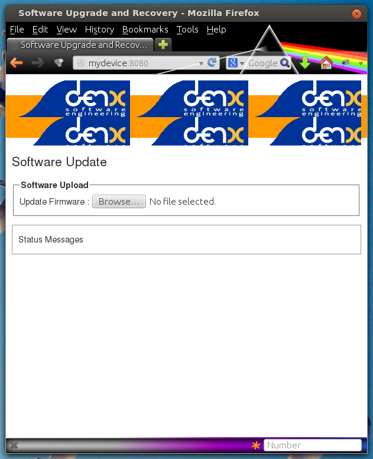

SWUpdate: software update for embedded system
Overview
This project is thought to help to update an embedded system from a storage media or from network. However, it should be mainly considered as a framework, where further protocols or installers (in SWUpdate they are called handlers) can be easily added to the application.
One use case is to update from an external local media, as USB-Pen or SD-Card. In this case, the update is done without any intervention by an operator: it is thought as “one-key-update”, and the software is started at reset simply pressing a key (or in any way that can be recognized by the target), making all checks automatically. At the end, the updating process reports only the status to the operator (successful or failed).
The output can be displayed on a LCD using the frame-buffer device or directed to a serial line (Linux console).
It is generally used in the single copy approach, running in an initrd (recipes are provided to generate with Yocto). However, it is possible to use it in a double-copy approach by use of Software collections.
If started for a remote update, SWUpdate starts an embedded Web-server and waits for requests. The operator must upload a suitable image, that SWUpdate checks and then install. All output is notified to the operator’s browser via AJAX notifications.
Features
General Overview
Install on embedded Media (eMMC, SD, Raw NAND, NOR and SPI-NOR flashes)
check if an image is available. The image is built in a specified format (cpio) and it must contain a file describing the software that must be updated.
SWUpdate is thought to update UBI volumes (mainly for NAND, but not only) and images on devices. Passing a whole image can still be updated as a partition on the SD card, or a MTD partition.
new partition schema. This is bound with UBI volume. SWUpdate can recreate UBI volumes, resizing them and copying the new software.
support for compressed images, using the xz, zlib and zstd library. tarball (tgz file) are supported.
support for partitioned USB-pen or unpartitioned (mainly used by Windows).
support for updating a single file inside a filesystem. The filesystem where to put the file must be described.
checksum for the single components of an image
use a structured language to describe the image. This is done using the libconfig library as default parser, that uses a JSON-like description.
use custom’s choice for the description of the image. It is possible to write an own parser using the Lua language. An example using a XML description in Lua is provided in the examples directory.
Support for setting / erasing U-Boot variables
Support for setting / erasing GRUB environment block variables
Support for setting / erasing EFI Boot Guard variables
Support for pre and post update commands run before the update starts processing data and after the update has finished successfully.
Support for lua hooks, executed before any handler runs.
Support for preinstall scripts. They run after streamed handlers have handled their data, and before regular handlers.
Support for postinstall scripts. They run after updating the images.
Network installer using an embedded Web-server (Mongoose Server was chosen, in the version under Lua license). A different Web-server can be used.
- Multiple interfaces for getting software
local Storage: USB, SD, UART,..
- OTA / Remote
integrated Web-Server
pulling from remote Server (HTTP, HTTPS, ..)
using a Backend. SWUpdate is open to talk with back end servers for rolling out software updates. Current version supports the hawkBit server, but other backend can be added.
Can be configured to check for compatibility between software and hardware revisions. The software image must contain an entry declaring on which HW revision the software is allowed to run. SWUpdate refuses to install if the compatibility is not verified.
support for image extraction. A manufacturer can require to have a single image that contains the software for more as one device. This simplifies the manufacturer’s management and reduces their administrative costs having a single software product. SWUpdate receives the software as stream without temporary storing, and extracts only the required components for the device to be installed.
allow custom handlers for installing FPGA firmware, micro-controller firmware via custom protocols.
Features are enabled / disabled using “make menuconfig”. (Kbuild is inherited from busybox project)
Images are authenticated and verified before installing
Power-Off safe
Single image delivery
The main concept is that the manufacturer delivers a single big image. All single images are packed together (cpio was chosen for its simplicity and because can be streamed) together with an additional file (sw-description), that contains meta information about each single image.
The format of sw-description can be customized: SWUpdate can be configured to use its internal parser (based on libconfig), or calling an external parser in Lua.

Changing the rules to accept images with an external parser, let to extend to new image types and how they are installed. In fact, the scope of the parser is to retrieve which single images must be installed and how. SWUpdate implements “handlers” to install a single image: there are handlers to install images into UBI volumes, or to a SD card, a CFI Flash, and so on. It is then easy to add an own handler if a very special installer is required.
For example we can think at a project with a main processor and one or several micro-controllers. Let’s say for simplicity that the main processor communicates with the micro-controllers via UARTS using a proprietary protocol. The software on the micro-controllers can be updated using the proprietary protocol.
It is possible to extend SWUpdate writing a handler, that implements the part of the proprietary protocol to perform the upgrade on the micro-controller. The parser must recognize which image must be installed with the new handler, and SWUpdate will call the handler during the installation process.
Streaming feature
SWUpdate is thought to be able to stream the received image directly into the target, without any temporary copy. In fact, the single installer (handler) receive as input the file descriptor set at the beginning of the image that must be installed.
The feature can be set on image basis, that means that a user can
decide which partial images should be streamed. If not streamed (see
installed-directly flag), files are temporary extracted into the directory
pointed to by the environment variable TMPDIR with /tmp as
fall-back if TMPDIR is not set.
Of course, by streaming it is not possible to make checks on the whole delivered
software before installing.
The temporary copy is done only when updated from network. When the image
is stored on an external storage, there is no need of that copy.
Images fully streamed
In case of remote update, SWUpdate extracts relevant images from the stream
and copies them into the directory pointed to by the environment variable
TMPDIR (if unset, to /tmp) before calling the handlers.
This guarantee that an update is initiated only if all parts are present and
correct. However, on some systems with less resources, the amount of RAM
to copy the images could be not enough, for example if the filesystem on
an attached SD Card must be updated. In this case, it will help if the images
are installed directly as stream by the corresponding handler, without temporary
copies. Not all handlers support to stream directly into the target.
Streaming with zero-copy is enabled by setting the flag “installed-directly”
in the description of the single image.
Configuration and Build
Requirements
There are only a few libraries strictly required to compile SWUpdate:
zlib(https://www.zlib.net)libubootenvfor U-Boot environment support (https://github.com/sbabic/libubootenv)json-cfor parsing JSON (https://github.com/json-c/json-c)
Further library dependencies may be required when activating more SWUpdate features, see the next section on Configuring SWUpdate.
Configuring SWUpdate
SWUpdate is configurable via make menuconfig. A small footprint
is realized, e.g., by using the internal parser and disabling the
web server. Every option has a small help describing its usage.
In the default configuration, many options are already activated.
To configure the options:
make menuconfig
Building
To cross-compile, set the CC and CXX variables before running make.
It is also possible to set the cross-compiler prefix as option with
make menuconfig. Then, generate the code by running
make
The result is the binary swupdate. Notably, the tools/swupdate-progress
binary is built as well. It is an example of how to build your own interface to
SWUpdate to, e.g., show a progress bar on an HMI. This example simply prints on
the console the current status of the update and, more importantly, reboots the
machine after successful installation.
Building with Yocto
See the corresponding chapter meta-swupdate: building with Yocto on how to build SWUpdate in Yocto.
Distribution Packages
SWUpdate is thought for Embedded Systems and building in an embedded distribution is the primary use case. But apart from the most used build systems for embedded systems like Yocto or Buildroot, in some cases, a standard Linux distro is used. SWUpdate is currently packaged for
Refer to the distribution source package and build system on how to build a package from source.
Running SWUpdate
What is expected from a SWUpdate run
The whole update process can be seen as a set of pipelines. The incoming stream (the SWU file) is processed by each pipe and passed to the next step. First, the SWU is streamed from one of the interfaces : local (USB, filesystem), Webserver, suricatta (one of the backend), etc. The incoming SWU is forwarded to the installer to be examined and installed. A run of SWUpdate consists mainly of the following steps:
extracts sw-description from the stream and verifies it It parses sw-description creating a raw description in RAM about the activities that must be performed.
if Signed Images is activated, extracts sw-description.sig and validate sw-description.
check for hardware-software compatibility, if any, reading hardware revision from hardware and matching with the table in sw-description.
Parse sw-description to determine which artefacts in the incoming SWU are required. Not required artifacts are simply skipped. If an “embedded-script” is defined, it is executed at this point before parsing files. If “hooks” are defined, they are executed as each file is parsed, even if they will be skipped. At the end of the parsing, SWUpdate builds an internal mapping for each artifact to recognize which handler should be called for each of them.
runs the pre update command, if set
runs partition handlers, if required.
- reads through the cpio archive one file at a time and either:
execute handlers for each file marked as “installed-directly”. checksum is checked while the data is streamed to handler, and copy will be marked as having failed if checksum was not correct failing the rest of the install.
copy other files to a temporary location while checking checksums, stopping if there was a mismatch.
iterates through all scripts and call the corresponding handler for pre-install scripts. Please note: if artifacts are streamed, they will be extracted before this runs. If earlier execution is required, please use the “embedded-script” or hooks features to ensure code is run before installation takes place.
iterates through all images and call the corresponding handler for installing on target.
iterates through all files and call the corresponding handler for installing on target.
iterates through all scripts and call the corresponding handler for post-install scripts
iterates through all bootenv and updates the bootloader environment.
reports the status to the operator through the notification interface (logging, traces) and through the progress interface.
runs the post update command, if set.
The first step that fails, stops the entire procedure and an error is reported.
To start SWUpdate expecting the image from a file:
swupdate -i <filename>
To start with the embedded web server:
swupdate -w "<web server options>"
The main important parameters for the web server are “document-root” and “port”.
swupdate -w "--document-root ./www --port 8080"
The embedded web server is taken from the Mongoose project.
The list of available options (depending on activated features) is shown with:
swupdate -h
This uses as website the pages delivered with the code. Of course, they can be customized and replaced. The website uses AJAX to communicate with SWUpdate, and to show the progress of the update to the operator.
The default port of the Web-server is 8080. You can then connect to the target with:
http://<target_ip>:8080
If it works, the start page should be displayed as in next figure.
If a correct image is downloaded, SWUpdate starts to process the received image. All notifications are sent back to the browser. SWUpdate provides a mechanism to send to a receiver the progress of the installation. In fact, SWUpdate takes a list of objects that registers itself with the application and they will be informed any time the application calls the notify() function. This allows also for self-written handlers to inform the upper layers about error conditions or simply return the status. It is then simply to add own receivers to implement customized way to display the results: displaying on a LCD (if the target has one), or sending back to another device via network. An example of the notifications sent back to the browser is in the next figure:

Software collections can be specified by passing –select command line option. Assuming sw-description file contains a collection named stable, with alt installation location, SWUpdate can be called like this:
swupdate --select stable,alt
Command line parameters
Parameter |
Type |
Description |
|---|---|---|
-f <file> |
string |
SWUpdate configuration file to use.
See |
-b <string> |
string |
Available if CONFIG_UBIATTACH is set.
It allows one to blacklist MTDs when
SWUpdate searches for UBI volumes.
Example: U-Boot and environment in MTD0-1:
|
-B <loader> |
string |
Override the default bootloader interface
to use |
-e <sel> |
string |
|
|
string |
|
-h |
Run usage with help. |
|
-k <file> |
string |
Available if CONFIG_SIGNED is set. Filename with the public key. |
-K <file> |
string |
Available on CONFIG_ENCRYPTED_IMAGES set. Filename with the symmetric key to be used for decryption. |
–cert-purpose <purpose> |
string |
Available if CONFIG_SIGNED_IMAGES is set. Set expected certificate purpose. |
–forced-signer-name <cn> |
string |
Available if CONFIG_SIGNED_IMAGES is set. Set expected common name of signer certificate. |
–ca-path <file> |
string |
Available if CONFIG_SIGNED_IMAGES is set. Path to the Certificate Authority (PEM). |
–get-root |
Detect and print the root device and exit |
|
–get-emmc- boot <device> |
If devic eis an eMMC, reads the CSD register and detect from which boot device has booted (mmcblkXboot0 or mmxblkXboot1) |
|
-l <level> |
int |
Set loglevel. |
-L |
Send LOG output to syslog (local). |
|
-i <file> |
string |
Run SWUpdate with a local .swu file. |
-n |
Run SWUpdate in dry-run mode. |
|
-N <version> |
string |
The minimum required version of software. This will be checked with the version of new software and forbids downgrading. Version consists of either 4 numbers (major.minor.rev.build with each field in the range 0..65535) or it is a semantic version. |
|
string |
The maximum required version of software. This will be checked with the version of new software. Version consists of either 4 numbers (major.minor.rev.build with each field in the range 0..65535) or it is a semantic version. |
-R <version> |
string |
The current installed version of software. This will be checked with the version of new software and forbids reinstalling. |
-o <file> |
string |
Save the stream (SWU) to a file. |
-s <file> |
string |
Save installed version info to a file. |
-v |
Activate verbose output. |
|
-M |
Disable setting the bootloader transaction marker. |
|
-m |
Disable setting the update state in the bootloader. |
|
-w <parms> |
string |
Available if CONFIG_WEBSERVER is set. Start internal webserver and pass to it a command line string. |
-d <parms> |
string |
Available if CONFIG_DOWNLOAD is set. Start internal downloader client and pass to it a command line string. See below the internal command line arguments for the downloader. |
-u <parms> |
string |
Available if CONFIG_SURICATTA is set. Start internal suricatta client daemon and pass to it a command line string. See below the internal command line arguments for suricatta. |
-H <board:rev> |
string |
Available on CONFIG_HW_COMPATIBILITY set. Set board name and hardware revision. |
-c |
Check |
|
-P <cmd> |
string |
Execute pre-update command. |
-p <cmd> |
string |
Execute post-update command. |
-q <sel> |
string |
|
Crypto selection parameters
Parameter |
Type |
Description |
|---|---|---|
|
string |
Select the implementation for signature verification. The list of implementation is written at start. Examples: opensslCMS opensslRSA, etc. |
|
string |
Select the implementation for decryption The list of implementation is written at start. Examples: openssl wolfssl, etc. |
|
string |
Select the implementation for hash computation. The list of implementation is written at start. Examples: openssl |
Downloader command line parameters
Example: swupdate -d "-u example.com"
Mandatory arguments are marked with ‘*’:
Parameter |
Type |
Description |
|---|---|---|
-u <url> |
string |
* This is the URL where new software is pulled. URL is a link to a valid .swu image |
-r <retries> |
integer |
Number of retries before a download is considered broken. With “-r 0”, SWUpdate will not stop until a valid software is loaded. |
-w <retrywait> |
integer |
Time to wait prior to retry and resume a download (default: 5s). |
-t <timeout> |
integer |
Timeout for connection lost downloader or Webserver |
-a <usr:pwd> |
string |
Send user and password for Basic Auth |
-n <value> |
string |
Maximum download speed to be used. Value be specified in kB/s, B/s, MB/s or GB/s. Examples: -n 100k : Set limit to 100 kB/s. -n 500 : Set limit to 500 B/s. -n 2M : Set limit to 1 M/s. -n 1G : Set limit to 1 G/s. |
Suricatta command line parameters
Example: swupdate -u "-t default -u localhost:8080 -i 1B7"
Note that different suricatta modules may have different parameters. The below listed options are for SWUpdate’s hawkBit support.
Mandatory arguments are marked with ‘*’:
Parameter |
Type |
Description |
|---|---|---|
-t <tenant> |
string |
* Set hawkBit tenant ID for this device. |
-u <url> |
string |
* Host and port of the hawkBit instance, e.g., localhost:8080 |
-i <id> |
integer |
* The device ID to communicate to hawkBit. |
-c <confirm> |
integer |
Confirm update status to server: 1=AGAIN, 2=SUCCESS, 3=FAILED |
-x |
Do not abort on flawed server certificates. |
|
-p <polldelay> |
integer |
Delay in seconds between two hawkBit poll operations (default: 45s). |
-r <retry> |
integer |
Resume and retry interrupted downloads (default: 5 tries). |
-w <retrywait> |
integer |
Time to wait prior to retry and resume a download (default: 5s). |
-y <proxy> |
string |
Use proxy. Either give proxy URL, else {http,all}_proxy env is tried. |
-k <targettoken> |
string |
Set target token. |
-g <gatewaytoken> |
string |
Set gateway token. |
-f <interface> |
string |
Set the network interface to connect to hawkBit. |
-e |
Daemon enabled at startup (default). |
|
-d |
Daemon disabled at startup. |
|
–disable-token-for-dwl |
Do not send authentication header when downloading SWU. |
|
–cache-file |
string |
This allows one to resume an update after a power cut. If the SWU is saved in a file, SWUpdate can reuse the file and download just the remaining part of the SWU. |
-m <seconds> |
integer |
Delay in seconds between re-trying to send initial feedback specified with “-c” option. Default value is 10 seconds. If Suricatta is started with initial state of STATE_WAIT (“-c 6”), this value is ignored. |
-s <seconds> |
integer |
Connection timeout to use in seconds. If user doesn’t set this option, default libcurl connection timeout value of 300 seconds is used. NOTE: it is not possible for Suricatta to respond to external program API requests during this period - adapt this value to your use case! |
-a <name> <value> |
strings |
Custom HTTP header with given name and value to be sent with every HTTP request made. |
-n <value> |
string |
Maximum download speed to be used. Value be specified in kB/s, B/s, MB/s or GB/s. Examples: -n 100k : Set limit to 100 kB/s. -n 500 : Set limit to 500 B/s. -n 2M : Set limit to 1 M/s. -n 1G : Set limit to 1 G/s. |
Webserver command line parameters
Example: swupdate -w "-r /www -p 8080"
Mandatory arguments are marked with ‘*’:
Parameter |
Type |
Description |
|---|---|---|
-r <document root> |
string |
* Path where the web app is stored. |
-p <port> |
integer |
* TCP port to be listened if not set, 8080 is used |
-s <ssl> |
* Enable SSL support. Note: it must be configured with CONFIG_MONGOOSESSL |
|
–ssl-cert <cert> |
string |
Path to the certificate to present to clients |
-K <key> |
string |
Path to key corresponding to ssl certificate |
-t <timeout> |
integer |
Timeout to consider a connection lost if clients stops to send data. If hit, an update is aborted. Default=0 (unlimited) |
–auth-domain <string> |
string |
Set authentication domain Default: none |
|
string |
Set authentication file if any Default: none |
systemd Integration
SWUpdate has optional systemd support via the compile-time
configuration switch CONFIG_SYSTEMD. If enabled, SWUpdate
signals systemd about start-up completion and can make optional
use of systemd’s socket-based activation feature.
A sample systemd service unit file /etc/systemd/system/swupdate.service
may look like the following starting SWUpdate in suricatta daemon mode:
[Unit]
Description=SWUpdate daemon
Documentation=https://github.com/sbabic/swupdate
Documentation=https://sbabic.github.io/swupdate
[Service]
Type=notify
RuntimeDirectory=swupdate
RuntimeDirectoryPreserve=yes
ExecStart=/usr/bin/swupdate -u '-t default -u http://localhost -i 25'
[Install]
WantedBy=multi-user.target
Started via systemctl start swupdate.service, SWUpdate
(re)creates its sockets on startup. For using socket-based
activation, an accompanying systemd socket unit file
/etc/systemd/system/swupdate.socket is required:
[Unit]
Description=SWUpdate socket listener
Documentation=https://github.com/sbabic/swupdate
Documentation=https://sbabic.github.io/swupdate
[Socket]
ListenStream=/run/swupdate/sockinstctrl
ListenStream=/run/swupdate/swupdateprog
[Install]
WantedBy=sockets.target
On swupdate.socket being started, systemd creates the socket
files and hands them over to SWUpdate when it starts. So, for
example, when talking to /run/swupdate/swupdateprog, systemd
starts swupdate.service and hands-over the socket files. The
socket files are also handed over on a “regular” start of SWUpdate
via systemctl start swupdate.service.
Note, that all dependent services need to access the swupdate
sockets via the paths specified in the swupdate.socket systemd
unit.
Changes in boot-loader code
The SWUpdate consists of kernel and a root filesystem (image) that must be started by the boot-loader. In case using U-Boot, the following mechanism can be implemented:
U-Boot checks if a sw update is required (check gpio, serial console, etc.).
the script “altbootcmd” sets the rules to start SWUpdate
in case SWUpdate is required, U-boot run the script “altbootcmd”
Is it safe to change U-Boot environment ? Well, it is, but U-Boot must be configured correctly. U-Boot supports two copies of the environment to be power-off safe during an environment update. The board’s configuration file must have defined CONFIG_ENV_OFFSET_REDUND or CONFIG_ENV_ADDR_REDUND. Check in U-Boot documentation for these constants and how to use them.
There are a further enhancement that can be optionally integrated into U-boot to make the system safer. The most important I will suggest is to add support for boot counter in U-boot (documentation is in U-Boot docs). This allows U-Boot to track for attempts to successfully run the application, and if the boot counter is greater as a limit, can start automatically SWUpdate to replace a corrupt software.
GRUB by default does not support double copies of environment as in case of U-Boot. This means that there is possibility that environment block get’s corrupted when power-off occurs during environment update. To minimize the risk, we are not modifying original environment block. Variables are written into temporary file and after successful operation rename instruction is called.
Image File Format
SWUpdate uses cpio as image file format because it is a simple,
well-established, and streamable format. More specifically, the
New ASCII format (header magic number 070701) and the
New CRC format (header magic number 070702) are supported.
Both formats are essentially equivalent with the New CRC format additionally
having set the cpio header field check to the least-significant 32 bits of
the sum of all (unsigned) data bytes. This checksum is verified by SWUpdate.
If this verification fails, SWUpdate yields an error like the following:
Checksum WRONG ! Computed 0xfa11ed00, it should be 0xffffffff
Note that there’s artifact sha256 verification available
(see CONFIG_HASH_VERIFY) which is recommended over relying
on cpio’s checksum facility.
For both cpio formats, the New ASCII as well as the New CRC format, the cpio file size is limited to 32 Bit, i.e., 4 GB.
Building a single image
cpio is used as container format because of its simplicity and its ability
to be streamed. The meta information file sw-description (default, see
CONFIG_SETSWDESCRIPTION) describing the images in the container must be
the first file in the cpio archive. The images follow it, in any order.
To produce an image, a script like the following can be used:
CONTAINER_VER="1.0"
PRODUCT_NAME="my-software"
FILES="sw-description image1.ubifs \
image2.gz.u-boot uImage.bin myfile sdcard.img"
for i in $FILES;do
echo $i;done | cpio -ov -H crc > ${PRODUCT_NAME}_${CONTAINER_VER}.swu
Alternatively, swugenerator may be used to generate the image.
The generated image can be checked by running the following command:
swupdate -c -i my-software_1.0.swu
Support of compound image
A single image can be built automatically inside Yocto.
meta-swupdate extends the classes with the swupdate class. A recipe
should inherit it and add an own sw-description file to generate the image.
Alternatively, swugenerator may be used to generate compound images outside Yocto.